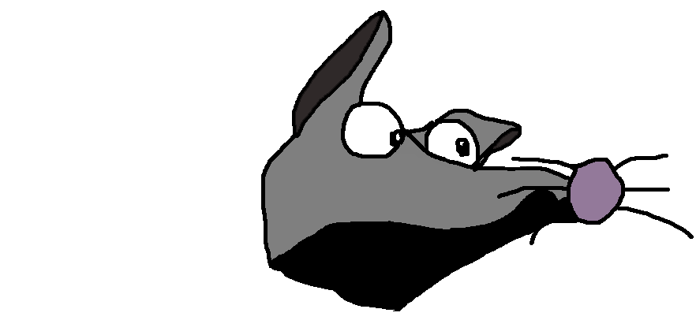

PAUL & YUSUF: SPOOKY SPOONING IN SPAIN
The return of TV stars Paul & Yusuf in a 9 episodes Story
#EmoDramaHorror #DigitalFantasy #SuccessDrama #EroticDrama #FeelGood #Challenging
Yusuf And Paul made it to the very remote hot and beautiful Galicia
where they find shelter in a deserted villa in the mountains...
How could they know that you can't escape your own ghost? Will their love prevail?
↓ ↓ ↓ WATCH THE FULL STORY HERE↓ ↓ ↓
PEREGRINATIONS OF A POETE PERDU
An exceptional travel testimonial in the Caribbeans
#IslandFever #SilentRetreat #AmeSolitaire
Marvin the Monkey is inquiring the meaning of life in the tropical islands of Guadeloupe
DOWN THE RABBITHOLE
Miniseries with Leopold Fedlman from London, by Maria Andrews
#Journalism #DarkTourism #WhiteOldMan #SelfHealing
What would a white old man do if he secretly admitted his ignorance?
Maybe all the blind spots would start to sparkle, and curiosity would awaken...
Follow dark tourist Leopold down the rabbithole...
JACKIE'S SLEEP JOURNAL
A daily report on sleep and dreams with Jackie Melon
#SpitirualSurrealism #DayDreaming #OutOfBodyExperience #LucidDream
One day, Jackie Melon woke up thought to herself:
if every morning I tried to recall my wildest dreams, I would be living in a dreamworld...
With that intention she has been sharing her dreams every day,
which has proven to have an influence on the viewers's dreams as well!
Try it! The playlist contains 39 dreams:
THE HELMISHOW
Global News around the clock
#Reportage #WorldPress #International #Sport #Weather #Astrology #Science
Follow the news coverage of our dedicated correspondents:
Leopold Fedlman from England, Arsch from Germany, Vincente and Globina from Brazil,
theoretical nuclear physicist Prof. Popko Brooks and Sex Astrologist Petra Kant.
Only here in the Helmishow:
>>> ERNIE & BERT 2.0 <<<
An original Helmiflix Miniseries by Anne Müller and Florian Loycke... 16+
#HomeTV #SeventiesDrama #Love #Comedy #Dramedy #Sitcom #Emotional #Exciting #Cute
What happens when you take everything for granted in a relationship?
You have looked away from the reality of your partner for years, but never forget: it goes both ways!
Ernie and Bert fight for all of us for their partnership and the meaning of living together
Die Samenbank
Politik
Winter

JOHNNY THE RAT
Dilogy on an Outsider Rat by Anke and Florian Loycke
#ActionMovie #Drama #Outsider #NatureFilm #Exciting #Funny #Cliche
Johnny is a underrated bloke with self-esteem-issues.
But nobody knows what he is really capable of!
PAUL & YUSUF
An original Helmiflix Story by Anne Müller and Florian Loycke
#SuccessDrama #EroticDrama #FeelGood #Challenging
When a reckless individualist and an autistic genius suddenly meet an equal with love,
they also meet their own hopes and fears. Paul and Yusuf, two trained egoists,
move together and start a relationship. Will they be able to save their love?
Playlist including 6 mini episodes:
...And below a very emotonial BONUS Episode! Don't miss it!
* * * * * * * * * * * * * * * * * * * * * * * *
The HELMIFLIX Team

Jackie Melon, Host

Leopold Fedlman, English correspondent

Arsch, German correspondent
Jacquelina, Superstar DJ

Sex Astrologist Petra Kant and intern Josh

Chanelle, Travel Reporter
Vincente, Brazilian Correspondent

Globina Irma de Toma, Vincente's assistant

Prof. Popko Brooks, theoretical nuclear physicist
Paul and Yusuf
Johnny The Rat
Ernie and Bert